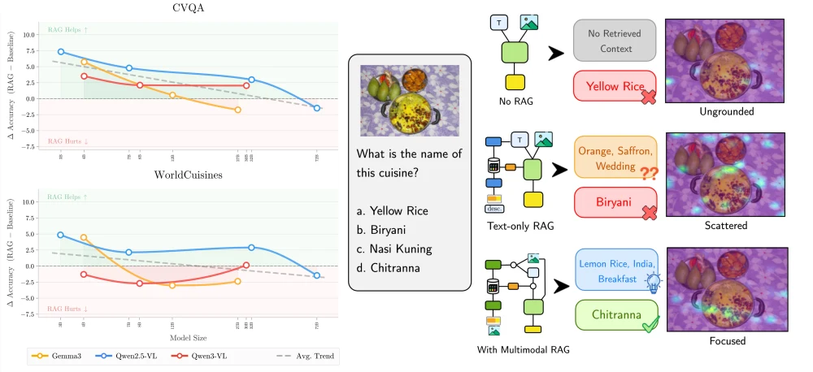

M4-RAG: A Massive-Scale Multilingual Multi-Cultural Multimodal RAG
David Anugraha, Patrick Amadeus Irawan, Anshul Singh, En-Shiun Annie Lee, Genta Indra Winata
IEEE/CVF Conference on Computer Vision and Pattern Recognition (CVPR), 2026
Paper / Poster
David Anugraha, Patrick Amadeus Irawan, Anshul Singh, En-Shiun Annie Lee, Genta Indra Winata
IEEE/CVF Conference on Computer Vision and Pattern Recognition (CVPR), 2026
Paper / Poster

We introduce M4-RAG, a massive-scale benchmark covering 42 languages and 56 dialects with over 80,000 culturally diverse image-question pairs to evaluate retrieval-augmented VQA. Our systematic evaluation reveals that while RAG consistently benefits smaller Vision-Language Models (VLMs), it fails to scale to larger models and often degrades their performance, exposing a critical mismatch between model size and current retrieval effectiveness.